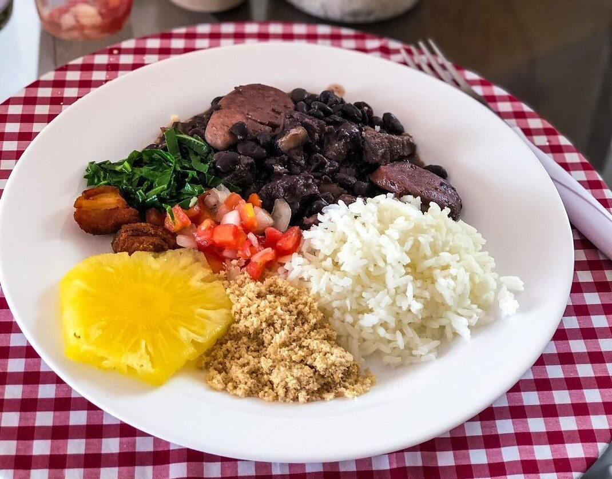

Home
Spicy Feijoada

Ingredients
Main
- 500 g dried black beans/li>
- 200 g pork shoulder or pork belly, cut into chunks
- 150 g smoked sausage (linguiça or kielbasa), sliced
- 150 g calabresa sausage (or spicy smoked sausage)
- 100 g bacon, diced
-
Optional bur traditional:
- 1 salted pork ear, tail, or ribs (soaked)
Aromatics & seasoning
- 2 tbsp oil or bacon fat
- 1 large onion, finely chopped
- 5–6 garlic cloves, minced
- 2 bay leaves
- Black pepper to taste
- Salt (add at the end)
To finish
- Fresh cilantro or parsley, chopped
- Orange slices (for serving)
Traditional slides (highly recommended)
- White rice
- Farofa (toasted cassava flour)
- Sautéed collard greens with garlic
- Hot sauce or malagueta peppers
Instructions
-
Prep the beans & meats
- Soak the black beans overnight in plenty of water.
- If using salted pork cuts, soak them separately for 12–24 hours, changing water 2–3 times.
- Drain everything before cooking.
-
Start the stewn
- In a large heavy pot, heat oil over medium heat.
- Add bacon and cook until rendered and lightly crispy.
- Add sausages and pork pieces; brown well.
- Remove meats and set aside (leave fat in the pot).
-
Build the flavor
- In the same pot, add onion and cook until soft and golden.
- Add garlic and cook until fragrant (30 seconds).
- Return meats to the pot.
- Add drained beans, bay leaves, and enough water to cover by ~5 cm.
-
Slow cook
- Bring to a gentle boil, then reduce to low.
- Simmer 2½–3 hours, stirring occasionally.
- Add water as needed to keep beans submerged.
-
Finish
- When beans are creamy and meats are tender, season with black pepper.
- Add salt only now, tasting carefully (the meats are salty).
- Mash a ladle of beans against the pot to thicken naturally.
- Stir in chopped herbs.
-
Rest & serve
- Let rest 15–20 minutes (it gets better).
- Serve with rice, farofa, collards, and orange slices.
Pro tips
- Feijoada is better the next day—the flavors deepen overnight.
- Skim excess fat if you want it lighter, but don’t overdo it.
- Traditionally served on Saturdays in Brazil… preferably with friends and caipirinhas